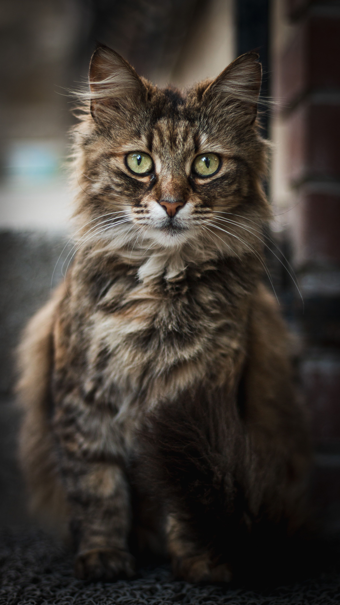
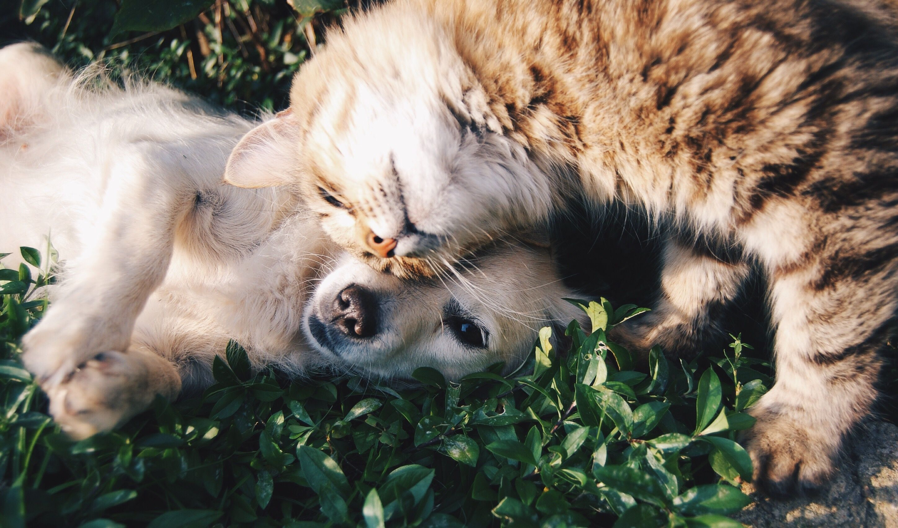
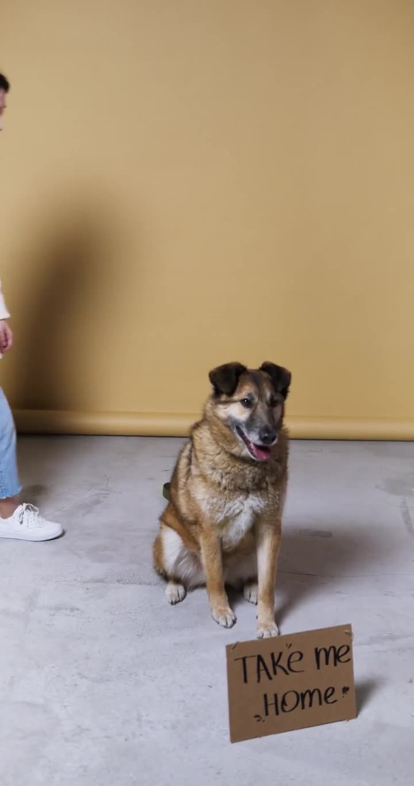

Más de 120 adopciones este año
Encuentra a tu nuevo mejor amigo
Cada mascota merece un hogar lleno de cariño. Conoce a quienes están esperando por ti y empieza hoy mismo el proceso de adopción.

Mascotas destacadas
Conoce a algunos de nuestros amigos que buscan familia.


Adoptar es muy fácil
Cuatro pasos para darle un hogar a tu nueva mascota.
1
Conoce a tu mascota
Explora los perfiles y encuentra a quien te robe el corazón.
2
Envía tu solicitud
Completa el formulario en 3 pasos sencillos.
3
Entrevista y visita
Conversamos contigo y coordinamos una visita.
4
Bienvenida a casa
Firma el compromiso y llévate a tu nuevo amigo.
Familias felices
Historias de quienes ya adoptaron con nosotros.
“Adoptar a Luna fue la mejor decisión. El proceso fue claro y el equipo siempre estuvo disponible.”
Familia RamírezAdoptaron a Luna
“Max llegó a casa y en un día ya era parte de la familia. Gracias por el acompañamiento.”
Carla y DiegoAdoptaron a Max
“Nos ayudaron a encontrar la mascota ideal para nuestros niños. ¡Totalmente recomendado!”
Familia TorresAdoptaron a Rocky